Colour Injector
interactive multicoloured lamp designed as a physical expression of the way red, green and blue light are used in digital interfaces to create a full spectrum of different hues
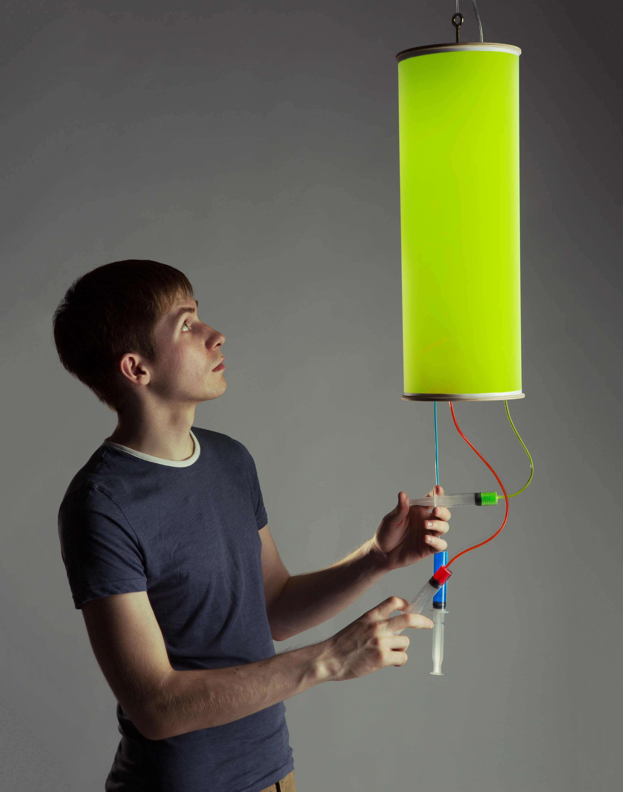
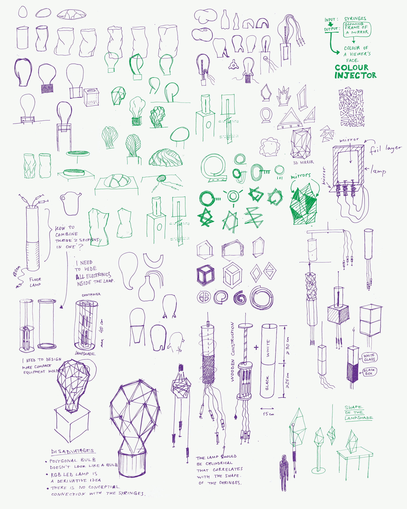
Syringes suspended below the lamp are connected to another set inside its body by empty tubes. So the ink can be seen moving towards or away from the lamp. The syringes inside the lamp are attached to sliding switches connected to Arduino microcontroller that controls the colour output of RGB LEDs. The system allows people to gradually change the light colour by providing a simple and intuitive interface.
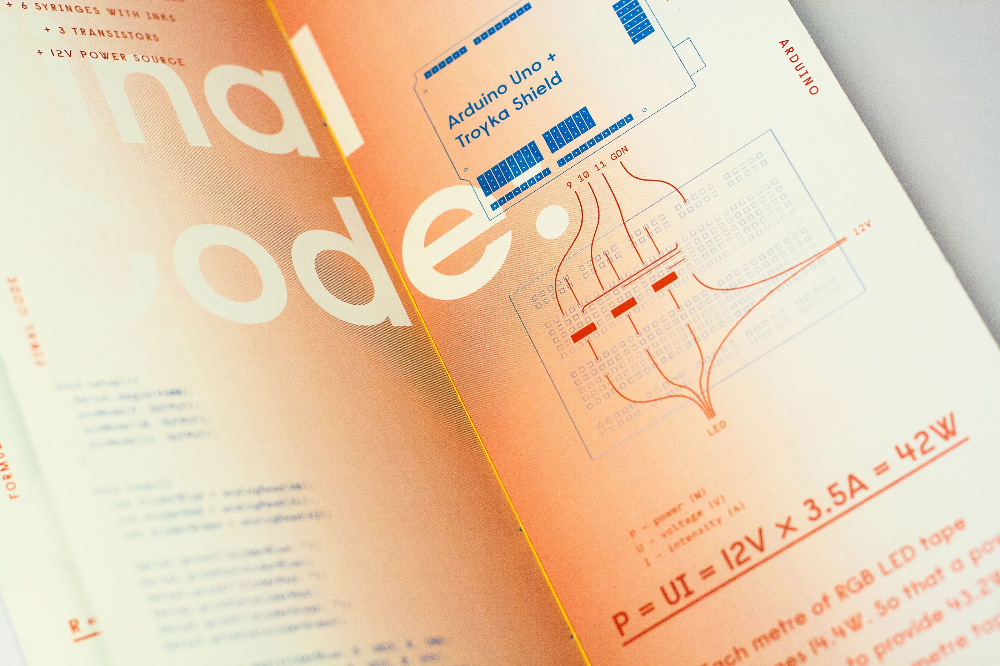
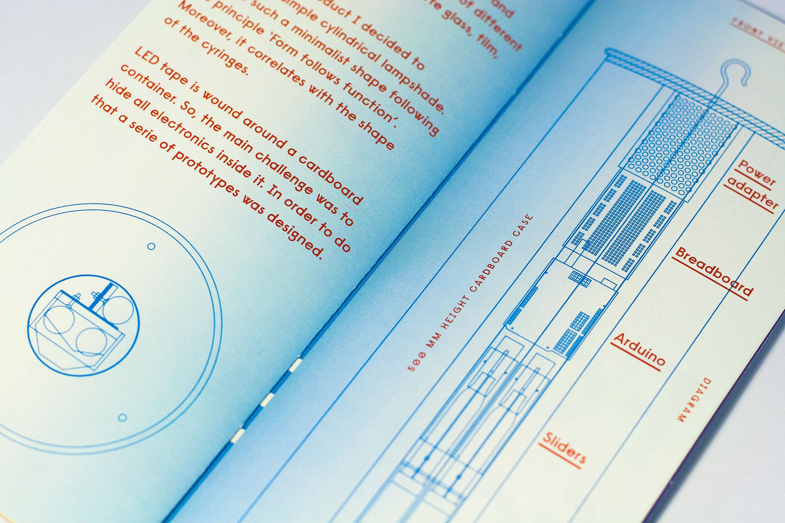
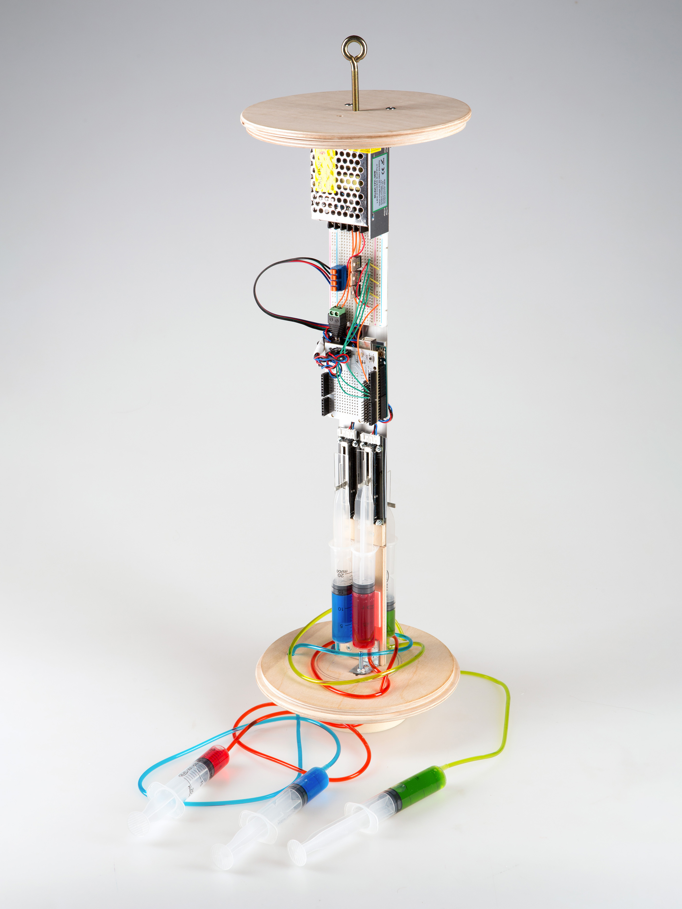
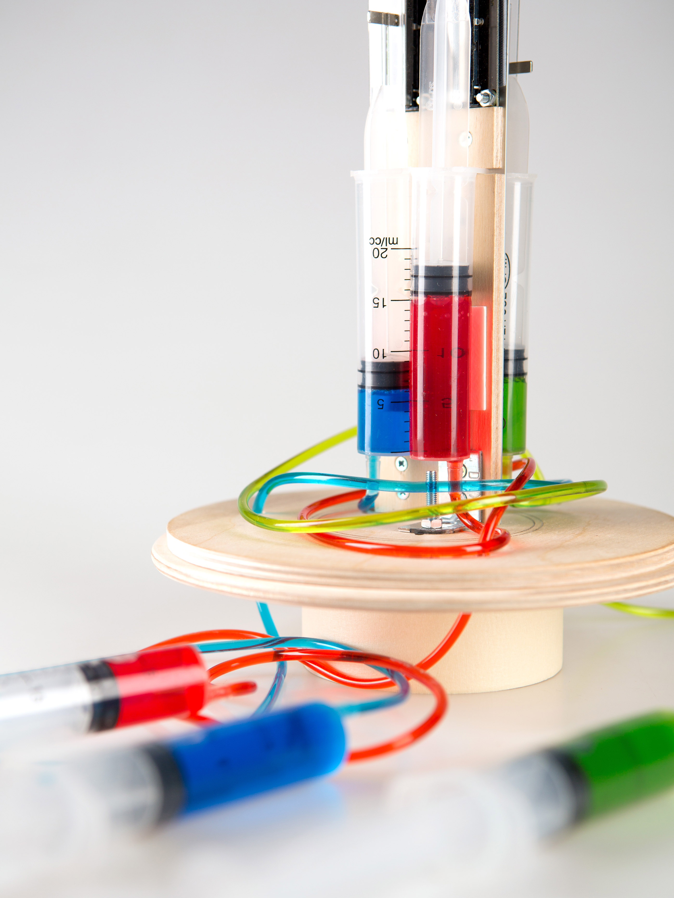
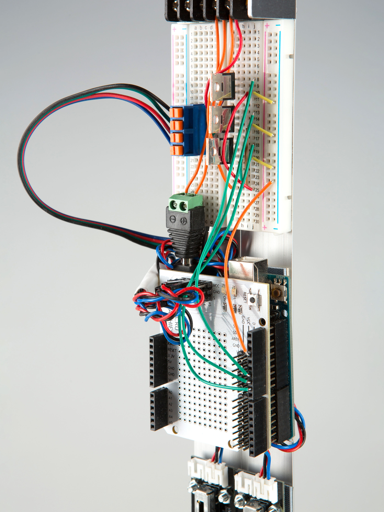
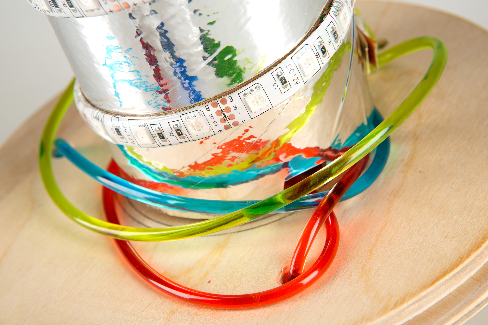
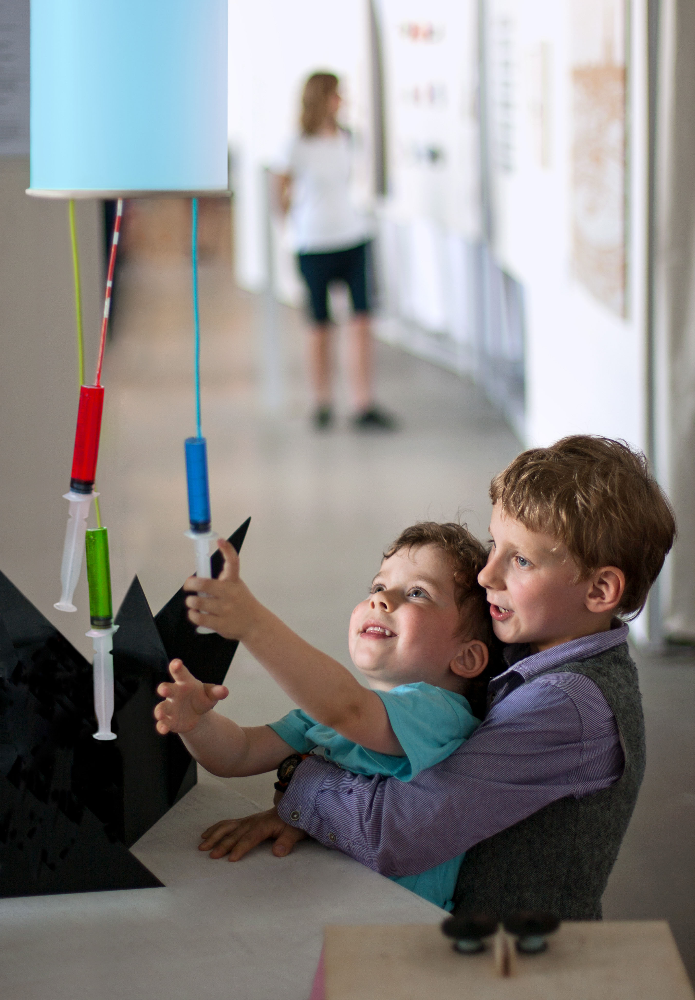
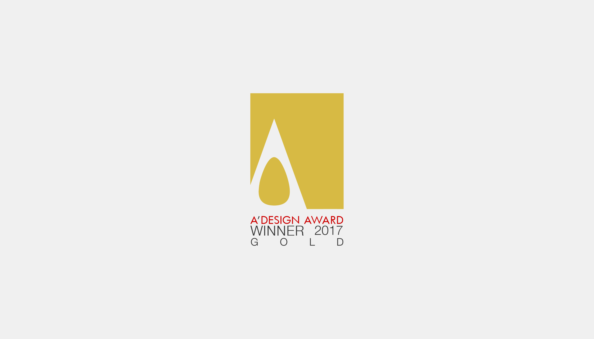
 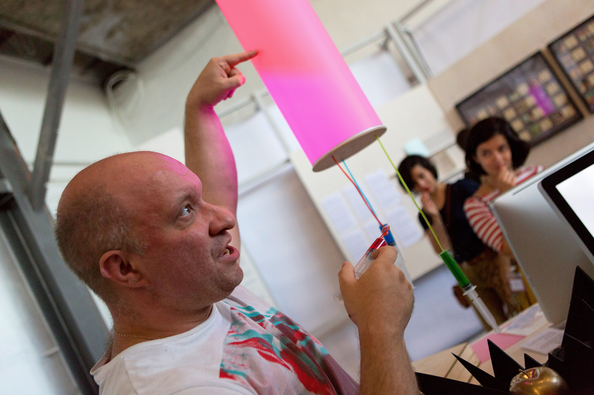
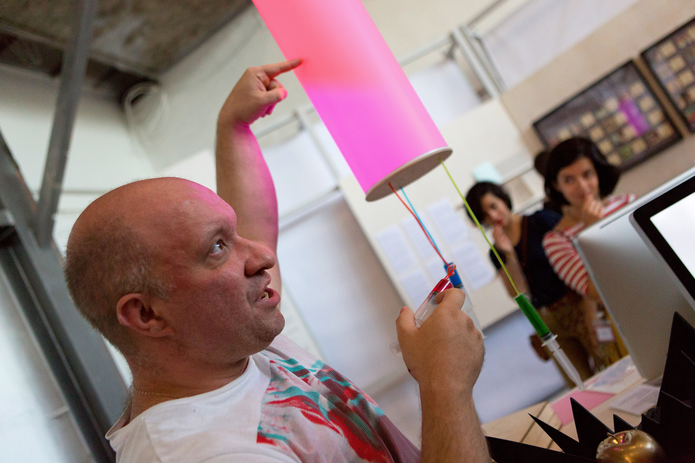